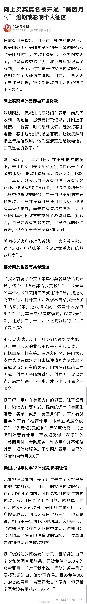
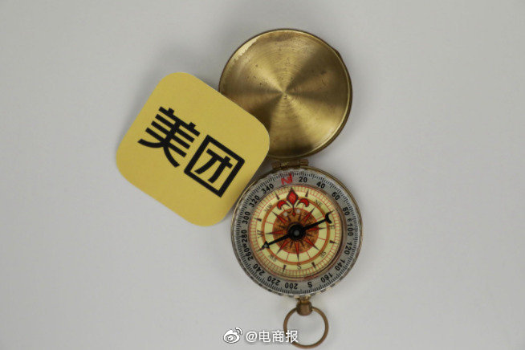

美团每次付完款都会跳出页面，喊你领红包。点进去有小字说明是要开通月付给的福利。真心话，美团App做得真好，操作行云流水，用户很容易就顺势点下去开通了这个本不需要的高利率信用卡。评论里给美团洗地的人，要点脸吧！
@电商报:
【网上买菜莫名被开通美团月付 】据北京青年报报道，日前有用户指出，自己在不知情的情况下，被美团外卖和美团买菜分别开通金融服务即 “美团月付”，欠款 100 多元。
】据北京青年报报道，日前有用户指出，自己在不知情的情况下，被美团外卖和美团买菜分别开通金融服务即 “美团月付”，欠款 100 多元。
据悉，“美团月付”是一种授信付款服务，逾期会在个人征信中体现。目前，当事人表示事件已处理，被免除贷款费用，但心情仍十分复杂。 消息称某用户使用美团APP被开通“美团月付”
消息称某用户使用美团APP被开通“美团月付”
据悉，“美团月付”是一种授信付款服务，逾期会在个人征信中体现。目前，当事人表示事件已处理，被免除贷款费用，但心情仍十分复杂。
- 
- 